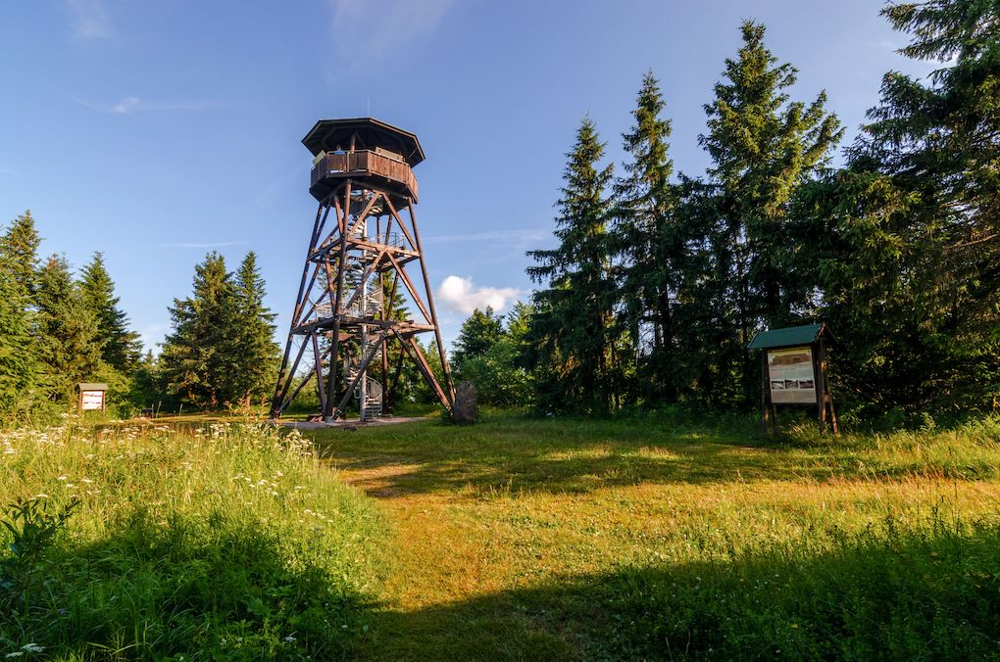

Rozhledna Anna
Nová rozhledna, která vyrostla na Anenském vrchu v roce 2010, dostala jméno Anna po vrchu na kterém stojí a také po sv. Anně, patronce Orlických hor. V roce 1856 byla na Anenském vrchu vystavěna kamenná kaple, ke které později přibyl kamenný kříž a socha sv. Marie. Tato kaple byla dvakrát přestavěna. Poprvé to bylo v roce 1820, podruhé v roce 1856 a později k ní ještě přibyly litinové pláty, chránící kapli před nepřízní počasí. V roce 1910 stanula na vrcholu také osm metrů vysoká dřevěná věž s malou vyhlídkovou plošinou. Tato vyhlídka zanikla koncem první světové války. Z vrchu zmizela i kaple, která byla z důvodu výstavby československého opevnění rozebrána a následně postavena v části Bartošovic v Orlických horách v osadě Hadinec. Původní objekty nahradily v blízkosti vrcholu dva bunkry těžkého opevnění, Arnošt a Anna, které jsou zde dosud. Rozhledna Anna stojící v nadmořské výšce 991 metrů je dřevěná a při její výstavbě bylo použito dřevo z modřínů, dubů a borovic. Točité schodiště je kvalitně zpracované a je vyrobené z ocele. Celková výška rozhledny je 17 metrů, vyhlídková plošina leží o pět metrů níž a vede k ní celkem 65 schodů. Jedná se o pěknou rozhlednu, vhodně zapadající do rázu zdejší krajiny. Vyhlídkou z Anny se můžete těšit pohledem na Orlické hory, Kralický Sněžník, Rychnovsko, okolí města Žamberka a také na Suchý vrch.
Kudy k Anně?
Rozhledna Anna se nachází přibližně 7 kilometrů severovýchodním směrem od města Rokytnice v Orlických horách, v okrese Rychnov nad Kněžnou. K rozhledně vede několik pěkných trasa. Po modré turistické značce se sem dostanete z Říček v Orlických horách, po zelené z Horní Rokytnice, velmi oblíbená je červená, vedoucí z parkoviště na Panském poli od zmiňované tvrze Hanička. Rozhledna Anna je volně přístupná.